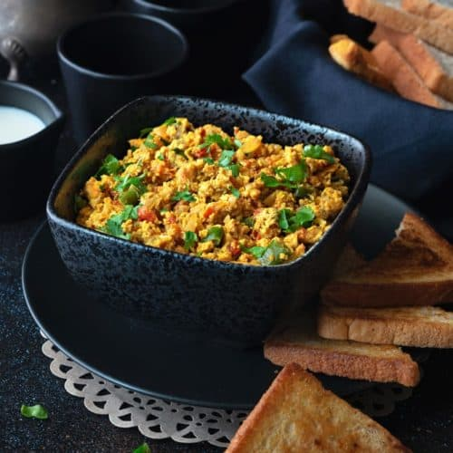

Anda Bhurji

Delicious anda bhurji
Nutritious and delicious scrambled eggs recipe with an added touch of
Indian masalas to satiate your taste buds.
Ingredients:
- 2 whole eggs.
- Chopped onions.
- Chopped tomatoes.
- Coriander leaves (optional).
- Ghee or butter.
- Salt and pepper.
- Garam masala.
Steps:
- Add two teaspoons of ghee/butter to a frying pan.
- Add chopped onions and tomatoes..
- Add salt, pepper and garam masala to taste.
- Fry until the onions are golden brown.
- Beat eggs in a bowl and then add them into the pan.
- Fry at low flame until light brown.
- Serve with coriander leaves on top.